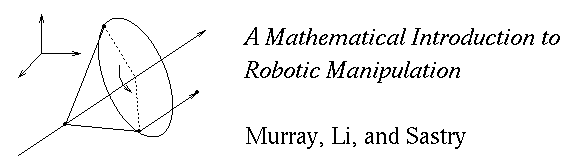

| Abstract | Table of Contents | Preface | Software |
Welcome to the MLS archive. This archive contains information about the book A Mathematical Introduction to Robotic Manipulation by R. M. Murray, Z. X. Li, and S. S. Sastry (CRC Press, 1994).
Richard Murray (murray@cds.caltech.edu)
Last modified: 06/12/99